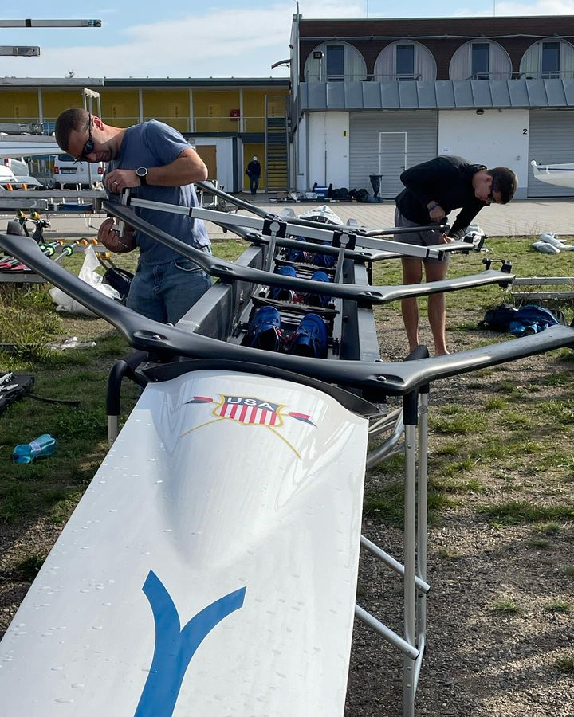

Hi! I'm Mark
Software Engineering Manager · Sanborn Map Company
Wave, smile, thank the teachers.
Why am I here?
I learned that there isn't just one path to success — and that engineering is everywhere
I want to do the same for you
How many of you have built something in Minecraft, edited a video, built a game, or solved a problem with technology?
My hope today:
you leave with one idea — that engineering can be anywhere you want it to be
So — what do I do?
Sanborn Map Company
Sanborn has been making maps since 1866.
We make
digital maps
for cities, states, the government, and private companies
I lead a team of
8 engineers
we build with all sorts of tech...
🧰 my team's toolbox
JavaScript (Node.js, React)
GitHub (+ Copilot)
Ruby on Rails
PostgreSQL (PostGIS)
Python
Rust
Google Cloud Platform / Maps
Redis
Docker
React Native (iOS, Android)
AWS
Azure
Kubernetes
Cesium (3D maps)
QGIS
Leaflet Maps
C#
R
PHP
and more...
Honestly?
most engineering is learning new tools — constantly.
Pause. The list isn't to impress — it's to show that no one knows all this on day one.
OK — but what does an engineering manager actually do all day?
xkcd #303 — "Compiling"
Let me walk you through a week
Every morning
15-minute standup with the whole team
what did you do yesterday? · what are you doing today? · what's blocking you?
Monday — 1-on-1s
30 minutes with each engineer
how's life? how's the code? what do you need from me?
Tuesday —
code
building a mobile app to show roadway conditions for all of Texas, used by hundreds of thousands of people daily!
Wednesday — Deploy and meet with customers!
get feedback, update on our progress
Thursday — build a
prototype
can we detect highway work zones from traffic-camera feeds?
(spoiler: yes, with a little AI)
Friday — dev lunch
then I read through the team's code and tell them what's great and what could be better
One does not simply deploy on Friday
Now — how did I end up here?
I went to
Brandeis University
studied International & Global Studies
note - not computer science!
While there, I started working at the
computer help desk
fixing people's busted laptops
turns out — I loved it
So I tried a
CS class
I almost failed it
(humbling.)
But I remember the one assignment I loved -- building an airplane seat reservation system
I got to design the UI and write the code to make it work
it was the first time I got to build something from scratch and see it come to life
And here's the thing I didn't notice at the time…
tech was sneaking into everything I did
I got hooked on building things
At the
help desk
I wasn't just fixing laptops — I was tweaking the little apps we used to run shifts and tickets
I was learning PHP and HTML to build tools to make my job easier, and I loved it
During college, I rowed
(and later coached for the US National Team)
and I built tools for my teams — rosters, lineups, workouts

Rigging the USA boat at a World Cup.
Same thread, different places:
find a problem → build something → make it better for people
that's engineering, and it is everywhere.
So — what are the takeaways?
- follow your passions
- engineering is everywhere
- learn to work on a team
- break things (then fix them)
- ask why? (and why not?)
- learn from everyone around you
- Hard Work Makes Good Code
Questions?
Thanks for listening!
now go build!